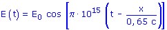

Una onda transversal
se propaga por una cuerda tensa siendo su ecuación (Unidades S.I):
y = 0.06 sen π(4
t - 2 x)
Calcula la constante de propagación,
longitud de onda, frecuencia angular, período, velocidad y sentido
de propagación |
La ecuación de una onda que se propaga
por una cuerda es y = 8 sen π(100 t - 8 x), (x, y: cm, t: s).
Calcula el tiempo que tardará la onda en recorrer 25 m |
La ecuación de una onda
que se propaga por una cuerda es:
y = 8·sen π(100
t - 8 x) ( x, y: cm, t: s)
Determina la diferencia de fase entre
dos estados de perturbación que tienen lugar:
a) En el mismo punto, en dos
instantes separados por un intervalo de tiempo de 0.015 s
b) En el mismo instante en
dos puntos separados 0.125 cm
|
Una onda se propaga por el semieje x positivo
siendo su período 3·10-3 s. La distancia entre
dos puntos cuya diferencia de fase en el mismo instante es de π/2 vale
30 cm.
Calcula la longitud de onda y la velocidad de propagación |
Supongamos una onda luminosa
de frecuencia 6·1014 Hz
a) ¿Qué distancia
hay entre dos puntos cuya diferencia de fase es de 60º?
b) ¿Qué cambio de
fase ocurre en un punto dado en 10-15 s? |
La ecuación de un movimiento
ondulatorio viene dada por: y = 4 sen π(0.025 x - 4 t) (x, y: cm, t: s)
Determina:
a) Amplitud, período,
longitud de onda, velocidad y sentido de propagación
b) Elongación del
punto x = 8 m para t = 5, 5.5 y 6 s
|
Una perturbación se propaga
según: φ = 0.002 sen(64 t - 4 x) (φ: N/m2,
x: m, t: s) Calcula:
a) Número de onda, pulsación,
velocidad de propagación, longitud de onda y frecuencia
b) Valor de la perturbación
en un punto a 3 m del foco a los 2 s de iniciado el movimiento |
La ecuación de una onda
que se propaga por una cuerda es: y(x, t) =5 sen(0.628 t - 2.2 x)
( x, y: m, t: s). Determina:
a) Amplitud, frecuencia y longitud
de onda
b) Velocidad de un punto situado
a 2 m del foco emisor en el instante t = 10 s
|
La ecuación de una onda
transversal propagándose por una cuerda es: y = 2 sen(31.4 t +
0.628 x)
(x, y: cm, t: s) Determina:
a) Longitud de onda, período,
velocidad y sentido de propagación
b ) Cuando alcanza la velocidad
máxima el punto x = 10 cm |
La ecuación de una onda
transversal propagándose por una cuerda viene dada por:
y = 25 sen π(0.8t - 1.25x) (Unidades.
x, y: cm, t: s)
a) Hallar amplitud, frecuencia,
longitud de onda y velocidad de propagación
b ) Determinar la velocidad
máxima de los puntos de la cuerda
c) Obtener la separación
entre dos puntos cuya diferencia de fase es 3π/2 |
Una onda transversal se propaga
por una cuerda tensa siendo su ecuación (Unidades S.I):
y = 4 sen (4π t
+ 0.025π x) ( x, y: cm, t: s)
Calcula la constante de propagación,
longitud de onda, frecuencia angular, período, velocidad y sentido
de propagación |
La ecuación del movimiento
de un impulso propagándose a lo largo de una cuerda es:
y = 10·cos(2 x - 4 t) (y:
cm, x: m, t: s), Calcula:
a) Velocidad de propagación
b) Instante en que la velocidad
de un punto de la cuerda situado a 1 m del origen será nula |
Una onda armónica
plana que
se propaga en el sentido positivo del eje OX tiene un período de
2 s.
En un instante dado, la diferencia de fase entre dos puntos separados
una distancia de 60 cm es igual a π radianes. Determina:
a) Longitud de onda y velocidad
de propagación
b) Diferencia de fase entre dos
estados de perturbación, en un mismo punto, que tienen lugar en
dos instantes separados por un intervalo de tiempo de 2 s |
Sea una onda plana no
amortiguada
cuya longitud de onda es de 30 cm. Calcular la diferencia de fase entre
dos puntos del medio, separados una distancia de 1.5 m en la dirección
de propagación de la onda
|
Por una cuerda tensa se propaga
una onda transversal de ecuación: y = 3 sen(62.8 t - 0.314
x)
( x, y: cm, t: s). Determina:
a) Período, longitud de
onda y velocidad de propagación
b) Estado del punto x = 78
cm en el instante t = 1 s
c) Estado del punto x = 108
cm en t = 1.15 s |
Dada la función de onda
y = 6 sen 2π(5 t - 0.1 x), (x, y: cm, t: s), determinar:
a) La longitud de onda, el
período, la frecuencia, número de onda y velocidad de propagación
b) Velocidad de vibración
del punto situado en x = 10 cm en el instante t = 1 s
c) Indica el sentido de propagación
de la onda y expresa la ecuación de otra onda idéntica a
la anterior pero propagándose en sentido contrario |
El vector campo eléctrico
E(t) de una onda luminosa que se propaga por el interior de un vidrio
viene dado por la ecuación:

En la anterior ecuación c
indica la velocidad de la luz en el vacio (3·108), E0
es una constante y la distancia y el tiempo se miden en metros y segundos
respectivamente. Se pide:
a) La frecuencia de la onda, su
longitud de onda y el índice de refracción del vidrio
b) La diferencia de fase entre dos
puntos del vidrio distantes 130 nm en el instante t = 0
|